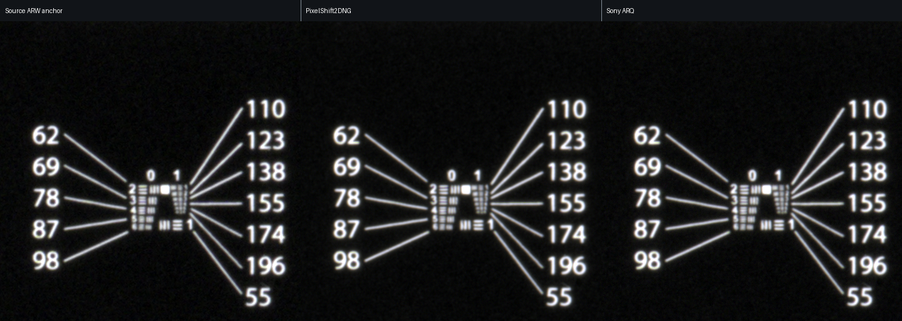
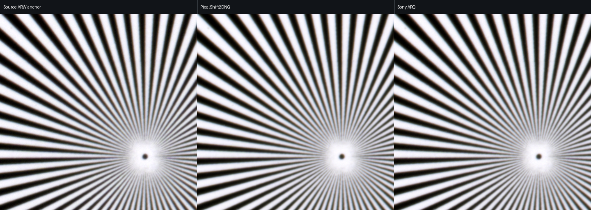
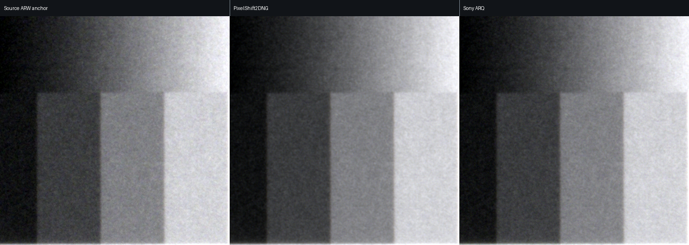
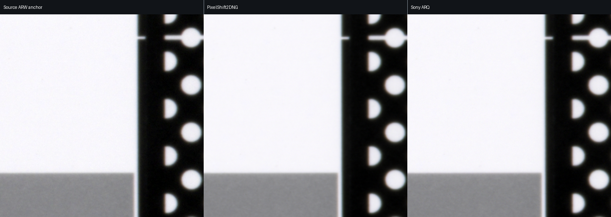
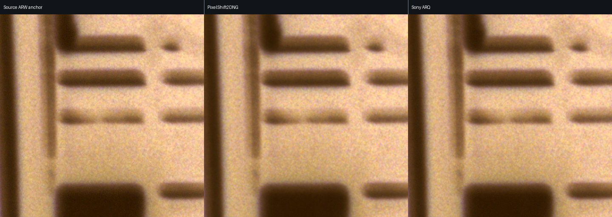

Candidate Comparisons
each comparison is one film material × frame × JXL distance
Fully Measured Comparisons
comparisons with all three required measurements: file size, color and structure
Favorable Diagnostic Comparisons
fully measured candidate comparisons favoring PS16 JXL; deliberately aggressive visual-stress levels are excluded
Median-size Budget Levels
JXL levels whose median file size is no larger than paired RAW61; image quality is evaluated by the separate color, structure, and visual checks
What We Have Learned
The current local data puts the storage break-even between d022 (106.4%) and d025 (86.3%).
The current numeric result is provisional because the RAW61 baseline includes render-profile, demosaic/acutance and registration effects, while PS16 JXL is measured against the PS16 render. The scope is a comparison of two complete archival workflows. Codec damage and RAW61-vs-PS16 baseline differences are therefore reported separately, with registered crop comparisons provided below for visual inspection.
The second storage option: direct muimg DNG/JXL produced 16 checked outputs of 66-116 MiB at d001. All passed metadata, full segment-decode and Adobe rewrite checks. That fits the separate budget of about 200 MiB per capture; most files remain larger than RAW61.
The counts above describe frame-and-quality combinations: the same frames recur at different compression settings. A favorable diagnostic comparison means that the size and error thresholds pass. Useful detail and acceptable grain still need visual interpretation.
How To Read The Comparison
1. Codec question
PS16 reference vs PS16 JXL. This is apples-to-apples and measures JPEG XL damage to a fixed rendered image state.
Answer so far
The tested lossy levels show very small patch color movement against the PS16 reference. A trained eye can still see changes in grain and texture, so the useful result is the measured quality boundary across compression levels.
2. Archive-value question
PS16 JXL vs RAW61. This is intentionally a workflow tradeoff: more sampling plus lossy coding versus less sampling plus raw preservation.
Answer so far
Current complete rows favor PS16 JXL in 54 of 150 comparisons, but RAW61 still has raw-edit latitude and fewer workflow assumptions. This is why the report separates codec damage from the broader archive-value verdict.
3. Break-even question
At what JXL distance does PS16 JXL stop carrying more useful film information than RAW61 at the same storage budget?
Answer so far
The current local data puts the storage break-even between d022 (106.4%) and d025 (86.3%). The levels currently below the RAW61 median-size budget are d025, d028, d030. Color, structure, and visual evidence remain separate decision gates, and broader film coverage is required for a general recommendation.
4. Operational question
Can the retained files remain decodable, documented, color-managed, and practical as archive masters or secondary masters?
Answer so far
The rendered route needs an explicit color profile and retained capture metadata. The muimg route keeps checked DNG interpretation fields and passed full decoding and Adobe rewrite checks on 16 outputs. The DNG section explains application compatibility and the scope of those measurements.
Two Storage Routes
Every PS16 result begins with a merged 16-shot capture. RAW61 is the separate single-shot comparison. Compression is applied at one of two stages:
- Rendered route: PS16 DNG → fixed RawTherapee render → standalone JPEG XL. A decoded JXL is compared with that same render to isolate compression changes. A registered RAW61 render supplies the alternative capture baseline.
- DNG route: PS16 DNG → muimg → DNG containing JPEG XL image data. This keeps checked camera interpretation metadata and delays rendering. Technical checks and camera-linear codec measurements appear separately below.
d030 means distance 0.30 and d001 means 0.01. Distance controls the encoder, while image content and processing stage determine size and error. Compare settings within their own route.
Level Summary
What this table is for: compare JPEG XL distance levels. The baseline table in Measurement Details explains the RAW61 comparisons.
Decision gate: a candidate passes the numeric screen when it is at or below the RAW61 storage budget and remains closer to the PS16 reference than RAW61 does for the current color and structure diagnostics.
Lossless row: this is specifically the unmeasured standalone-JXL baseline for the rendered route. The measured lossless DNG/JXL corpus is reported separately in the DNG section below.
Important: the colors below are project-specific diagnostic labels. Formal FADGI conformance requires calibrated target captures and the prescribed measurement workflow; the present FADGI-style measurements serve as interpretation anchors for rendered film scans and compression candidates.
Size
Answers whether the retained PS16 JXL candidate fits inside the paired RAW61 storage budget. Values over 100% are larger than RAW61.
JXL color p95
The reference and candidate receive the same deterministic hard inversion. The image is then divided into 256-pixel patches at the analysis resolution. Each patch is averaged in linear ProPhoto RGB before conversion to Lab. Each frame reports patch p95; this level table reports p95 again across those frame values. Below 1 is small. The metric covers mean color and tone under stress; grain shape is handled by structure and visual review.
Color ratio
JXL color movement divided by RAW61-vs-PS16 color baseline. Below 1 means JXL is closer to PS16 than RAW61 is for this metric.
Structure ratio
Luminance minus a 5×5 local blur isolates fine-scale variation. The RMS difference between candidate and PS16 high-pass images is divided by the PS16 high-pass RMS. The ratio column then divides this result by RAW61's result. Below 1 means JXL is closer to PS16 for this diagnostic. It responds jointly to grain, edges, acutance, noise, and residual alignment; visual review supplies the perceptual interpretation.
| JXL level | Current gate | Median size (% RAW61) | Median retained size (MiB) | Size range (% RAW61 / MiB) | JXL color p95 (DeltaE00) | Color loss ratio (x RAW61) | JXL structure error (fraction of PS16 detail RMS) | Structure ratio (x RAW61) | Verdicts |
|---|---|---|---|---|---|---|---|---|---|
| JPEG XL distance label for the standalone rendered route. d020 means distance 0.20, d030 means distance 0.30. Higher distance usually means smaller files and more loss. The standalone lossless row stays outside break-even counting; lossless DNG/JXL is reported in its own section. | Plain-language status after combining size and the current diagnostics. Too large means the image metrics may still look strong, but the median file size is above the paired RAW61 budget. | Median retained standalone PS16 JXL size divided by paired 61 MP RAW size. 100% means the same storage cost as RAW61; below 100% means the JXL candidate is smaller. | Median encoded standalone JXL file size in mebibytes. The small text also shows the paired RAW61 median size, so the percent budget can be checked in normal file-size units. | Minimum and maximum retained JXL size across complete frame pairs, shown both as percent of RAW61 and as encoded MiB. Wide ranges mean the level depends strongly on image content. | Both images receive one fixed, reference-derived density inversion. At the analysis scale, 256 x 256-pixel patches are averaged in linear ProPhoto RGB, converted to Lab, and compared with CIEDE2000. This value is the 95th percentile across frames of each frame's patch p95: this nested summary emphasizes higher-error frames and patches. Lower is better; the metric covers mean color and tone movement, while structure analysis covers grain. | Median JXL color movement divided by the RAW61-vs-PS16 color baseline. Below 1 means JXL stays closer to PS16 than RAW61 does for this diagnostic. | For each image, luminance minus a 5 x 5 local blur isolates fine structure. We take the RMS of candidate-minus-reference high-pass values and divide by the RMS of the PS16 high-pass reference. Thus 0 is exact and 0.20 means error RMS is 20% of the reference's fine-structure RMS. It can reflect grain, edges, acutance or noise and must be checked visually. | Median JXL high-pass detail loss divided by RAW61 high-pass detail loss after registration. Below 1 means the JXL candidate remains structurally closer to PS16 than RAW61. | Counts of per-frame verdict labels at this JXL level. These counts explain whether the summary is broad or driven by a few frames. |
| lossless (standalone JXL) | Not measured excluded from break-even counting | pending measurement DNG/JXL lossless is measured separately below | - shown to anchor the codec scale | - | 0.00 ΔE00 by definition against the PS16 reference | 0.00x RAW61 zero codec color loss | 0.000 loss zero high-pass codec loss | 0.00x RAW61 zero codec structure loss | standalone codec baseline; DNG/JXL results are in the DNG section |
| d003 | Too large image metrics may still be strong, but median size is above RAW61 |
560.7 % of RAW61 larger than RAW61 |
378.6 MiB JXL median; RAW61 median 67.3 MiB |
293.5% - 591.4 % of RAW61 360.1 MiB - 392.5 MiB |
0.26 ΔE00 small codec color shift |
0.00x RAW61 well below RAW61 baseline |
0.153 loss error is 15.3% of PS16 high-frequency RMS |
0.16x RAW61 well below RAW61 baseline |
uncertain_over_budget: 15 |
| d005 | Too large image metrics may still be strong, but median size is above RAW61 |
448.2 % of RAW61 larger than RAW61 |
302.9 MiB JXL median; RAW61 median 67.3 MiB |
233.6% - 470.4 % of RAW61 282.0 MiB - 316.2 MiB |
0.26 ΔE00 small codec color shift |
0.01x RAW61 well below RAW61 baseline |
0.156 loss error is 15.6% of PS16 high-frequency RMS |
0.16x RAW61 well below RAW61 baseline |
uncertain_over_budget: 15 |
| d010 | Too large image metrics may still be strong, but median size is above RAW61 |
281.6 % of RAW61 larger than RAW61 |
196.8 MiB JXL median; RAW61 median 67.3 MiB |
154.3% - 303.9 % of RAW61 162.5 MiB - 204.6 MiB |
0.30 ΔE00 small codec color shift |
0.01x RAW61 well below RAW61 baseline |
0.161 loss error is 16.1% of PS16 high-frequency RMS |
0.17x RAW61 well below RAW61 baseline |
uncertain_over_budget: 15 |
| d020 | Too large image metrics may still be strong, but median size is above RAW61 |
121.7 % of RAW61 larger than RAW61 |
83.1 MiB JXL median; RAW61 median 67.3 MiB |
60.2% - 134.9 % of RAW61 69.2 MiB - 92.6 MiB |
0.27 ΔE00 small codec color shift |
0.01x RAW61 well below RAW61 baseline |
0.164 loss error is 16.4% of PS16 high-frequency RMS |
0.17x RAW61 well below RAW61 baseline |
ps16_jxl_likely_wins: 2, uncertain_over_budget: 13 |
| d022 | Review zone near the storage or image-quality boundary; needs visual review |
106.4 % of RAW61 near RAW61 budget |
73.1 MiB JXL median; RAW61 median 67.3 MiB |
54.6% - 121.4 % of RAW61 58.2 MiB - 83.6 MiB |
0.27 ΔE00 small codec color shift |
0.02x RAW61 well below RAW61 baseline |
0.165 loss error is 16.5% of PS16 high-frequency RMS |
0.17x RAW61 well below RAW61 baseline |
ps16_jxl_likely_wins: 7, uncertain_over_budget: 8 |
| d025 | Passes current gates median size is under RAW61 and current diagnostics favor PS16 JXL |
86.3 % of RAW61 within RAW61 budget |
62.0 MiB JXL median; RAW61 median 67.3 MiB |
48.3% - 104.4 % of RAW61 47.0 MiB - 71.2 MiB |
0.28 ΔE00 small codec color shift |
0.01x RAW61 well below RAW61 baseline |
0.165 loss error is 16.5% of PS16 high-frequency RMS |
0.17x RAW61 well below RAW61 baseline |
ps16_jxl_likely_wins: 15 |
| d028 | Passes current gates median size is under RAW61 and current diagnostics favor PS16 JXL |
72.1 % of RAW61 within RAW61 budget |
54.7 MiB JXL median; RAW61 median 67.3 MiB |
43.5% - 88.7 % of RAW61 40.1 MiB - 60.2 MiB |
0.27 ΔE00 small codec color shift |
0.01x RAW61 well below RAW61 baseline |
0.166 loss error is 16.6% of PS16 high-frequency RMS |
0.17x RAW61 well below RAW61 baseline |
ps16_jxl_likely_wins: 15 |
| d030 | Passes current gates median size is under RAW61 and current diagnostics favor PS16 JXL |
69.7 % of RAW61 within RAW61 budget |
49.6 MiB JXL median; RAW61 median 67.3 MiB |
38.9% - 79.2 % of RAW61 36.6 MiB - 53.9 MiB |
0.58 ΔE00 small codec color shift |
0.02x RAW61 well below RAW61 baseline |
0.167 loss error is 16.7% of PS16 high-frequency RMS |
0.17x RAW61 well below RAW61 baseline |
ps16_jxl_likely_wins: 15 |
| d100 | Visual stress only deliberately aggressive reference; excluded from archive-candidate verdicts |
17.3 % of RAW61 within RAW61 budget |
12.2 MiB JXL median; RAW61 median 67.3 MiB |
10.4% - 20.9 % of RAW61 8.7 MiB - 14.7 MiB |
0.56 ΔE00 small codec color shift |
0.03x RAW61 well below RAW61 baseline |
0.182 loss error is 18.2% of PS16 high-frequency RMS |
0.18x RAW61 well below RAW61 baseline |
excluded from decision; visual stress reference |
| d200 | Visual stress only deliberately aggressive reference; excluded from archive-candidate verdicts |
10.0 % of RAW61 within RAW61 budget |
7.2 MiB JXL median; RAW61 median 67.3 MiB |
5.7% - 12.0 % of RAW61 4.9 MiB - 8.5 MiB |
0.66 ΔE00 small codec color shift |
0.04x RAW61 well below RAW61 baseline |
0.208 loss error is 20.8% of PS16 high-frequency RMS |
0.20x RAW61 well below RAW61 baseline |
excluded from decision; visual stress reference |
Color Legend And Units
Current gate
green means the level passes the current size, color and structure gates. yellow means review zone. red means too large or image risk. The colors summarize a decision state; units appear in the adjacent metric cells.
Size cells
Unit: percent of paired RAW61 size, plus encoded MiB. green is at or below 100% RAW61. yellow is up to 115%. red is clearly over the RAW61 storage budget.
ΔE00 cells
Unit: CIEDE2000 color difference. The table uses patch p95 after the current negative-density stress transform. green is below 1. yellow is 1-2. orange is 2-3. red is above 3.
Ratio cells
Unit: multiple of the RAW61-vs-PS16 baseline. Example: 0.25x RAW61 means one quarter of the RAW61 baseline error. Values below 1 favor PS16 JXL for that metric.
Structure cells
The value is normalized high-pass error: error RMS divided by PS16 high-frequency RMS. 0.000 is exact; 0.200 means the mismatch RMS is 20% of the reference's fine-structure RMS. This quantifies signal mismatch; the color-coded ratio then compares that mismatch directly with RAW61.
FADGI note
These colors are project-specific interpretation aids. Formal FADGI conformance requires its calibrated capture and assessment procedure. The relevant methodological lesson is to keep color, tone, registration, sharpening, noise, and structure separate.
How The Tested Levels Move
The bars treat each tested JXL setting as a discrete category because the sampled distance values are unevenly spaced. Each chart has its own vertical scale. The dashed line is the RAW61 comparison gate: 100% for storage and 1.0x for the two relative-error measures.
Visual Review
What this section is for: judge whether the numeric advantage translates into useful visible detail. These are crops from the rendered route; muimg DNG candidates are covered separately below.
The locally aligned RAW61 render stays fixed on the left. Select PS16 lossless or a PS16 JXL quality on the right, then compare them side by side or overlay the selected PS16 candidate directly over RAW61. Use ←/→ to move between Film candidates, View, and Candidate quality; use ↑/↓ to change the selection; press O to toggle the overlay.
Rendered RGB edit latitude
Clipping: -
Scope: This tests editing latitude inside the fixed rendered RGB chain: the already-rendered 16-bit RGB pixels are decoded, adjusted identically, and only then reduced to the 8-bit display canvas. It measures neither the full latitude in the original raw files nor what a different raw developer, demosaic, white balance, highlight reconstruction, or camera profile could recover.
Pixelshift Combiner Audit
Outcome: Sony ARQ is the stronger latitude reference in this bounded audit: it wins all 5/5 shadow crops and 4/5 highlight crops. PixelShift2DNG retains the stronger detail correlation in 5/5 crops. Neither combiner clipped valid crop pixels.
What changed: each combiner is registered and independently exposure-matched to the first source ARW before the range tests. The median correction was -0.10 EV for PixelShift2DNG and +0.00 EV for Sony ARQ, so a global brightness offset cannot decide the winner.
Boundary: Two 16-frame sequences rendered through the same RawTherapee 5.12 neutral profile. This does not prove a universal winner and it does not double the JPEG XL matrix. It identifies the fairer latitude baseline where matching Sony ARQ material exists; the existing PS16/JXL codec comparisons remain internally valid.
Each combiner crop is registered and exposure-matched in linear-luminance midtones to the first source ARW from the same sequence. A 24 px registration margin is excluded. Tone RMSE uses a 9x9 low-pass image; detail correlation is reported separately.
{kind=link}

_DSC6582-_DSC6597 · shadow: Sony · highlight: PixelShift2DNG · detail: PixelShift2DNG
{kind=link}

_DSC6582-_DSC6597 · shadow: Sony · highlight: Sony · detail: PixelShift2DNG
{kind=link}

_DSC6582-_DSC6597 · shadow: Sony · highlight: Sony · detail: PixelShift2DNG
{kind=link}

_DSC6582-_DSC6597 · shadow: Sony · highlight: Sony · detail: PixelShift2DNG
{kind=link}

_DSC6798-_DSC6813 · shadow: Sony · highlight: Sony · detail: PixelShift2DNG
Controlled RAW Exposure Latitude
Outcome: four stationary ISO 100 ARW brackets (16 frames) show that a meter-normal RAW61 is not automatically a complete latitude reference. The median dense-band gain from the best bracket exposure was 2.05x, while one white-shirt set still had 8.76% of the analysis grid clipped in every exposure.
Validation: measured raw response followed reported shutter EV with 0.012 EV median absolute error. The analysis works before demosaic or tone mapping, uses leave-one-out HDR references, and reports R/G1/G2/B clipping separately.
Boundary: this calibrates the source-ARW anchor; it is not an ARQ, PixelShift2DNG, Pixel Shift, or JPEG XL comparison.
Full method, exact bracket membership, plots, and limitations
| Case | Normal max channel clip | Best dense EV | Dense improvement | Best thin EV | All frames clipped |
|---|---|---|---|---|---|
| Church interior | 0.000% | +2.64 EV | 3.61x | +0.00 EV | 0.00% |
| Dinner with white shirt | 0.003% | +0.00 EV | 1.00x | -3.00 EV | 0.00% |
| Child beside Christmas tree | 0.197% | +5.91 EV | 3.04x | +0.00 EV | 0.00% |
| White-shirt dinner | 12.704% | +1.68 EV | 1.06x | -1.32 EV | 8.76% |


muimg Direct DNG/JXL Probe
This route addresses the larger, approximately 200 MiB DNG budget. The main level table and viewer above cover standalone rendered JXL.
Corpus-wide DNG/JXL Storage
The lossless DNG/JXL row is kept here, separate from the standalone rendered-JXL table above. Both rows use the same 16 PS16 DNG sources.
| Candidate | Files | Median size | Size range | Median size vs source DNG | Median size vs RAW61 | Decoded result |
|---|---|---|---|---|---|---|
| lossless DNG/JXL | 16 | 590.59 MiB | 540.01-690.96 MiB | 94.7% | 870.3% | 16/16 exact in checked crops; all segments decoded |
| d001 DNG/JXL | 16 | 103.19 MiB | 65.95-115.73 MiB | 17.1% | 152.5% | lossy; see qualification below |
Source-relative percentages compare each encoded DNG/JXL file with its own PixelShift2DNG source before taking the median. RAW61 percentages use the separately captured, Sony-compressed 61 MP raw file paired with each PS16 sequence.
Corpus Qualification
Technical result: 16 of 16 candidates stayed below 200 MiB, preserved every checked interpretation-relevant DNG field, decoded all main-image JXL segments, and were accepted and rewritten by Adobe DNG Converter. Stored sizes span 65.95-115.73 MiB.
Image-quality scope: these codec measurements compare decoded DNG samples with the source PS16 DNG. The earlier 15/16 favorable count divided camera-linear errors by RAW61 errors measured after rendering. Those processing stages and aggregations differ, so that count cannot establish a RAW61 quality advantage. It is retained in the machine-readable history as an exploratory screen and is excluded from the conclusion here.
The corpus files were generated through the repository wrapper that suppresses muimg/tifffile's erroneous preview-shape ImageDescription. A byte-level probe confirmed that this removes the warning without changing the main JPEG XL codestream.
Practical Archival Reading
What the evidence supports now: for a storage-constrained workflow, muimg d001 DNG/JXL is a credible candidate for retaining PS16 within a 200 MiB allowance. All 16 capture sets, including the flat-field control, passed the documented technical checks. The files retain checked DNG interpretation fields and can be recovered through the tested Adobe conversion path. Source removal should follow output verification, two independent copies and visual review in the intended rendering workflow.
Current portability constraint: decoder diversity is still narrow. Adobe DNG Converter accepted every tested file, while the tested RawTherapee and darktable paths could not decode the JPEG XL-compressed DNG image data. Routine DNG 1.7/JPEG XL support across raw applications would make these files easier to use and reduce dependence on the Adobe conversion path.
Why the negative result is especially encouraging: color-negative material is deliberately demanding here. Removing the orange mask and applying a steep inversion can magnify small codec-induced color and tone changes that remain inconspicuous in the original negative. That makes the measured codec behavior encouraging for uses with gentler downstream transforms. The public examples below show how this sensitivity changes across material; the benefit depends on the image and subsequent editing.
Initial resolution-target experiment and codec measurements
Why this probe exists: test whether JPEG XL can remain inside a DNG while avoiding the stored-shape, crop-origin, WhiteLevel, and opcode rewrites seen in the lossy Adobe DNG Converter path.
Tool: muimg 0.1.20260718.1648, effort 7. Test material: Adox high-resolution black-and-white test target, PS16 _DSC6582-_DSC6597 paired with RAW61 _DSC6577.
Result on one resolution-target frame: between d006 and d007 on this frame. The preview-bearing d007 candidate is 94.6% of its paired RAW61 size. The checked geometry, white level, color matrices, camera/lens identity, and exposure metadata remained intact.
Evidence scope: this initial probe covers one frame in camera-linear space. The corpus section extends technical validation to 16 capture sets. Its historical cross-pipeline quality ratios are excluded from the conclusion. The tested RawTherapee and darktable paths could not decode JPEG XL image data inside DNG, so the same-render end-to-end comparison remains unavailable
Lossless identity
0 changed samples out of 734,515,200; maximum error 0. Decoded pixel hashes matched.
Preview-safe candidate
The generated preview adds about 1.51 MiB. Its 3,750 encoded main-image segments have the same SHA-256 as d007 without a preview.
Low-distance calibration
The d001 main codestream is byte-identical to d003 on this frame. Lossless is 574.43 MiB; the first observed lossy plateau is about 87.60 MiB. Distance controls quality, while output size varies with image content; interpolation cannot target exactly 200 MiB.
Preserved in the checked file
stored main-image shape, ActiveArea, DefaultCropOrigin, DefaultCropSize, WhiteLevel, ColorMatrix1, ColorMatrix2, AsShotNeutral, Make, Model, UniqueCameraModel, LensModel, exposure settings and capture time.
Still missing
ExifVersion, NewRawImageDigest, NoiseReductionApplied, RawDataUniqueID. Lossy output requires recalculated raw-data IDs and digests.
Lossy color path
Lossless used original-profile/non-XYB; all four sampled d007 main-image tiles used XYB. The lossy path is therefore still perceptually transformed and needs the negative-like stress checks shown here.
| Candidate | Stored size | Size vs RAW61 | Hard-density color p95 (ΔE00) | Mean / worst normalized structure error |
|---|---|---|---|---|
| lossless | 574.43 MiB | 861.0% | 0.0000 | 0.0000 / 0.0000 |
| d001 + preview | 89.11 MiB | 133.6% | 0.0816 | 0.2310 / 0.3746 |
| d003 | 87.60 MiB | 131.3% | 0.0816 | 0.2310 / 0.3746 |
| d005 | 87.60 MiB | 131.3% | 0.0816 | 0.2310 / 0.3746 |
| d006 | 73.46 MiB | 110.1% | 0.0912 | 0.2688 / 0.4368 |
| d007 | 61.58 MiB | 92.3% | 0.1020 | 0.3103 / 0.4980 |
| d007 + preview | 63.09 MiB | 94.6% | 0.1020 | 0.3103 / 0.4980 |
| d010 | 42.46 MiB | 63.6% | 0.1219 | 0.3957 / 0.6544 |
| d022 | 21.79 MiB | 32.6% | 0.2065 | 0.4931 / 0.8075 |
| d025 | 19.80 MiB | 29.7% | 0.2272 | 0.5032 / 0.8176 |
Color and structure values compare decoded muimg output with the source PS16 DNG in camera-linear sample space. They isolate codec behavior; comparison with the report's post-RawTherapee RAW61 baselines requires the separate rendered pipeline. "Normalized structure error" is high-pass mismatch RMS divided by source high-pass RMS; 0 is exact, and the value describes signal mismatch rather than a percentage of real detail lost.
Application Check
| Application | Status | Observed locally |
|---|---|---|
| Adobe DNG Converter 18.5 | pass | accepted and rewrote all 16 clean d001 corpus candidates |
| RawTherapee 5.12 | fail | JPEG XL-compressed DNG: Error loading file |
| darktable local build | fail | JPEG XL-compressed DNG: rawspeed reported no RAW chunks |
Compatibility scope: DNG 1.7 added JPEG XL as compression type 52546. The local failures are specific to decoding JPEG XL-compressed image data inside DNG; other DNG 1.7 features remain outside this application check. Implementation references: Adobe DNG specification and SDK, RawSpeed DNG/JXL support, and RawTherapee RAW loading.
Full method, metadata audit, and interpretation
Public Reproducibility Check
What this adds: the same JPEG XL and post-codec density-inversion stress pipeline was run on six public images: three FADGI/OpenDICE transmissive targets and three Library of Congress photographs. This makes the codec behavior reproducible without publishing the private full-resolution film scans.
Result: across the six 2048-pixel test crops, d=0.03 was cleanest, d=0.05 remained the conservative lossy candidate, and d=0.10 produced larger errors. The hard density transform amplified errors that were less prominent in the unchanged image. Each panel shows reference, decoded JXL, amplified absolute difference, and amplified signed difference.
Boundary: these TIFFs test codec and stress-transform behavior. Storage break-even requires paired RAW61 and PS16 camera captures, so these public files contribute reproducibility evidence only.
Method, metrics, provenance, and complete public-test interpretation


Measurement Details
These tables explain the baseline behind the ratios and the rendering choices that influence it. Use them when a crop looks surprising or a metric disagrees with your visual judgment.
Frame baselines and rendering settings
RAW61 Baseline By Frame
What this table is for: show the apples-to-oranges part explicitly. RAW61 values are frame baselines: they are expected to repeat across JXL levels and should be reviewed for alignment, acutance, color profile and tone differences.
How to read stress color: RAW61 and PS16 are first registered and rendered through the declared neutral pipeline. The same PS16-derived normalization, logarithmic transmission-to-density conversion, clipping, fixed channel balance and steep contrast curve are then applied to both. Patch means are compared as ΔE00. A much larger stress value than normal color means differences that look modest in the negative become prominent after this deliberately severe inversion. Its scope is a reproducible sensitivity test with PS16 as the comparison reference; FilmLab-style rendering and absolute ground truth remain separate questions.
Current result: In the current 15-frame baseline, normal per-frame patch p95 values span 0.73-1.32 DeltaE00; after stress they span 2.25-7.90, with 12 above the project's DeltaE00 3 review threshold. The hard inversion therefore amplifies RAW61-versus-PS16 workflow differences. JPEG XL codec loss is measured separately against the PS16 reference.
| Scan set | Frame | RAW61 color | RAW61 stress color | RAW61 structure | Worst JXL color | Worst JXL structure |
|---|---|---|---|---|---|---|
| Scan collection or material label. Rows with the same name belong to the same film, target, or source batch, but each frame is evaluated separately. | Specific frame or capture-set identifier used to join the paired RAW61, PS16 reference, and JXL evidence for this row. | 95th-percentile patch CIEDE2000 difference for RAW61 versus the PS16 reference before the negative-density stress transform. Lower means the RAW61 render is closer to PS16. JXL codec loss appears in the separate candidate columns. | After registration, both RAW61 and PS16 receive the same reference-derived density mapping: normalize transmission, convert with -log(), clip the outer range, apply one fixed channel balance, then a steep contrast curve. We average 256 x 256-pixel patches in linear ProPhoto RGB, convert means to Lab, and report patch p95 DeltaE00. Higher than baseline color means inversion amplifies workflow differences. Codec isolation and film-scanner emulation require their respective separate tests. | Normalized high-pass error for RAW61 versus PS16 after registration. Luminance minus a 5 x 5 blur isolates fine variation; difference RMS is divided by PS16 high-pass RMS. 0 is exact and 1 means mismatch RMS equals the reference fine-structure RMS. Capture, demosaic, acutance, noise and residual alignment all contribute; JXL codec loss appears in the separate candidate column. | Largest PS16 JXL-versus-PS16 stress DeltaE00 found across the JXL levels currently included for this frame. It identifies the most color-disruptive tested level; lower is better. | Largest normalized PS16 JXL-versus-PS16 high-pass error across included JXL levels. 0 is exact; 0.20 means error RMS is 20% of the PS16 fine-structure RMS. It can expose altered grain, edges, or noise; visual crop inspection supplies the information-value judgment. |
| Adox high-resolution black-and-white test target Vlad resolution target |
_DSC6577 | 0.92 | 2.25 | 0.788 | 0.58 | 0.025 |
| fuji_679_f_ii_1983 | _DSC6938 | 0.86 | 7.90 | 1.150 | 0.16 | 0.308 |
| fuji_679_f_ii_1983 | _DSC6959 | 0.84 | 4.85 | 0.841 | 0.29 | 0.137 |
| fuji_679_f_ii_1983 | _DSC6980 | 0.85 | 6.41 | 0.970 | 0.88 | 0.199 |
| Kodak Gold 200-5 1997 | _DSC6735 | 1.32 | 7.38 | 1.533 | 0.47 | 0.165 |
| Kodak Gold 200-5 1997 | _DSC6756 | 0.91 | 4.63 | 1.025 | 0.19 | 0.190 |
| Kodak Gold 200-5 1997 | _DSC6793 | 0.81 | 6.02 | 0.975 | 0.15 | 0.191 |
| Kodak Gold 200-5 1997 | _DSC6814 | 1.07 | 2.89 | 0.993 | 0.10 | 0.133 |
| Kodak5035 H190-1983 | _DSC6619 | 0.85 | 5.90 | 1.041 | 0.37 | 0.208 |
| Kodak5035 H190-1983 | _DSC6661 | 0.77 | 4.53 | 1.103 | 0.14 | 0.277 |
| Kodak5035 H190-1983 | _DSC6682 | 0.99 | 4.29 | 1.113 | 0.61 | 0.223 |
| konica_vx100_probable_1995 | _DSC6836 | 0.73 | 7.23 | 1.151 | 0.55 | 0.365 |
| konica_vx100_probable_1995 | _DSC6857 | 0.98 | 4.14 | 1.174 | 0.10 | 0.341 |
| konica_vx100_probable_1995 | _DSC6879 | 0.94 | 3.88 | 1.154 | 0.12 | 0.249 |
| konica_vx100_probable_1995 | _DSC6917 | 1.04 | 2.67 | 1.222 | 0.07 | 0.210 |
Render/Profile Audit
Current profile
profiles\rawtherapee\neutral-render.pp3
Render index contains 18 RAW61 rows and 19 PS16 rows.
Color management
Input profile: (camera)
Working profile: ProPhoto
Output profile: RTv4_Large
White balance warning
WB enabled: true
WB setting: Camera
Camera WB can differ between ARW and PixelShift2DNG metadata, so RAW61 may render less orange even with the same profile file.
Detail handling
RAW Bayer demosaic: amaze
Sharpening enabled: false
Apparent RAW61 sharpness can still come from demosaic/acutance, scaling and local alignment.
What The Color Bands Mean
CIEDE2000 (ΔE00) measures color difference. Here it compares patch averages after a shared stress transform, so a small value can coexist with visible grain changes. The color bands are project review thresholds that prioritize inspection. Acceptability depends on the intended image use.
FADGI separates color, tone, resolution and noise. Its star ratings require calibrated targets and the prescribed assessment procedure. The public FADGI/OpenDICE images above provide reproducible codec inputs. This report reports no OpenDICE conformance result.
Alternative investigated: Adobe DNG Converter compression
ADC DNG/JXL
Current conclusion: Adobe DNG Converter 18.5 can create DNG 1.7 files with internal JPEG XL, and the tested lossless low-level crops were exact. Lossy ADC rewrites the image state and is not usable in the project's reference renderer, so this path is excluded from the core break-even verdict. The active candidate is standalone JXL from a fixed 16-bit PS16 render.
Why ADC DNG/JXL Was Excluded Nine documented findings covering geometry, sample interpretation, application support, visual validation, and storage.
How to read the list: “confirmed” records something observed in the local files or application probe. “Open validation” identifies evidence that would be required before reconsidering this path and sits outside the current work queue.
Stored image shape Confirmed rewrite
- Observed
- In the active PixelShift 16 batches, lossy ADC changed the main raster from
19200×12752to19120×12736. The small earlier smoke-test files showed the same pattern at9600×6376to9552×6360. Lossless ADC kept the source shape. - Actual problem
- The lossy file no longer has the source file's stored pixel grid. This may be a valid flattening of the active area, but direct pixel indexing and geometry metadata from the source are no longer interchangeable.
- Required before reconsideration
- Compare the same active image area through a crop-aware renderer, confirm that no useful edge pixels or placement information are lost, and keep the source DNG until that result is reproducible.
Crop origin / active placement Confirmed rewrite
- Observed
- The active crop origin changed from
[8, 8]in the source to[0, 0]in every checked lossy candidate. This is consistent with ADC writing the active area as the new stored raster. - Actual problem
- The coordinate system changed. Copying the old crop tag back would shift the image or trim a second time; comparing the two rasters without applying their own crop metadata would compare different locations.
- Required before reconsideration
- Verify placement in at least two independent full DNG render paths and compare registered active areas rather than raw array coordinates.
WhiteLevel Confirmed rewrite
- Observed
- Lossy ADC changed all three channel values from
14848to65535. Lossless ADC retained14848. - Actual problem
- The stored sample domain was rescaled. Restoring the old tag or dividing both files by one assumed scale can produce false tone, clipping, or highlight-recovery differences.
- Required before reconsideration
- Use each file's declared scale, apply its required opcodes, then test clipping and recoverable latitude through the same trusted renderer. The current low-level normalization supports diagnostic comparison; restoration of the original raw-scale semantics requires the complete render path.
OpcodeList2 Confirmed dependency
- Observed
- The checked lossy files added three channel-specific
MapPolynomialoperations where the source had noOpcodeList2. Applying those maps removed the large false domain mismatch in the first raster comparison. - Actual problem
- A decoder that extracts the JXL pixels but ignores the DNG opcodes does not recover the intended linear values. Correct rendering now depends on complete support for this processing step.
- Required before reconsideration
- Confirm the same result in independent DNG renderers and record which archive applications apply the opcode correctly. Copying or deleting the opcode is not a safe repair.
Lossy embedded color path Confirmed sample, limited scope
- Observed
- Representative main-image tiles from two local files used the JPEG XL XYB path for lossy
d=0.05; lossless main-image tiles used the original-profile, non-XYB path. The outer DNG still labels the imageLinearRaw. - Actual problem
- The lossy path preserves the image through a perceptual transform rather than camera-native linear channel samples. Its response may differ under negative inversion, channel balancing, or future extreme edits.
- Required before reconsideration
- Inspect representative tiles across the corpus and run the actual ADC output through the same post-inversion and grading tests used for the archive decision.
RawTherapee compatibility Confirmed incompatibility
- Observed
- A local RawTherapee 5.12 CLI probe returned
Error loading filefor both one lossless ADC DNG/JXL and its lossyd=0.05counterpart. The source PixelShift2DNG files are already rendered by the same workflow. - Actual problem
- The fixed RawTherapee pipeline currently stops at JPEG XL-compressed image data inside DNG 1.7. The embedded JXL pixels decode independently, and the application finding is limited to this raw-loading path.
- Required before reconsideration
- A RawTherapee version whose RAW-loading path opens and correctly processes JPEG XL-compressed DNG 1.7, or another trusted renderer that can render both sides with equivalent settings and documented color handling.
Independent full-DNG decode Open validation
- What exists
- The project can extract main-image JXL tiles, decode matched crop windows, normalize by the declared white level, and apply the observed
MapPolynomialopcodes. Lossless crops are exact through that path. - Actual missing evidence
- This custom low-level check covers tile extraction, pixel decoding, and selected metadata. Consistent interpretation of crops, color matrices, opcodes, previews, and metadata still requires an independent full DNG implementation.
- Required before reconsideration
- Matching color-managed renders from at least one independent DNG/JXL-capable application, followed by an application matrix for the tools expected in the real workflow.
Real edit and visual review Open validation
- What exists
- Low-level crop metrics already show the expected ordering: lossless is exact,
d=0.03is cleaner thand=0.05, andd=0.10develops a much worse error tail after negative-like stress. - Actual missing evidence
- The missing evidence is a blinded, end-to-end comparison after a real color-managed inversion and grading workflow. That review would test whether low average patch error still permits objectionable grain, texture, or local-density changes.
- Required before reconsideration
- Registered same-render outputs, clipping and latitude checks, and blinded visual review on representative real negatives.
Storage-budget coverage Not reached
- Observed
- Lossless ADC retained roughly
85-97%of the source PS16 DNG size in complete local rows. Even the tested lossyd=0.10files were about161-888%of their paired 61 MP raw files. - Actual problem
- The tested conservative ADC levels reduce PS16 storage substantially but remain larger than the RAW61 budget, leaving the same-storage question open for this path.
- Required before reconsideration
- Generate and validate an ADC distance bracket that actually crosses the paired RAW61 size, or report ADC as a separate larger-budget candidate. The current main break-even result therefore uses standalone JXL from a fixed PS16 render.
Practical Takeaway
PS16 plus JPEG XL offers a useful storage tradeoff in the material tested. Use the rendered table to find settings near your budget, then inspect matching crops and stress views. Finer sampling can survive substantial compression; acceptable grain and color changes remain a visual decision.
For a roughly 200 MiB DNG budget, muimg d001 deserves attention: the tested files fit comfortably and passed the documented technical checks. Retain conversion settings, hashes, metadata audits and decode results. Before removing sources, verify two independent copies, a working recovery path and the candidate's appearance through your intended rendering and inversion workflow.